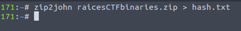
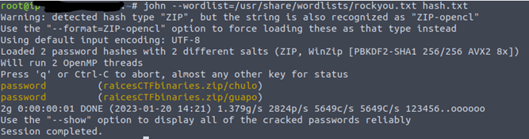

CTF Writeups
Writeup Categories
Raices CTF Binary Analysis
Password Protected Zip File
Upon downloading the task files, we are presented with the file raicesCTFbinaries.zip. We cannot extract the contents until we crack the password on the zip. This is where John the Ripper comes in.
Step 1: Open Terminal and run:
zip2john raicesCTFbinaries.zip > hash.txt

Step 2: Now that we have our hash file, it is time to run the hash against our wordlist to crack the password. In terminal, run:
john --wordlist=/path/to/wordlist hash.txt

The password to the zip file is “password”
Now we have cracked the password to the zip file, it is time to continue with the Binary Analysis section!
Q1: What is the MD5 of the chulo binary?
Step 1: Open Terminal in the Extracted folder containing the Chulo Binary
Step 2: Run this command in Terminal:
md5sum chulo
The printed content is your flag!
Q2: What is the SHA1 of the chulo binary?
Step 1: With your same Terminal session, run:
sha1sum chulo
The printed content is your flag!
Q3: What is the SHA256 of the chulo binary?
Step 1: With your same Terminal session, run:
sha256sum chulo
The printed content is your flag!
Q4: What was the first submission of the guapo binary to Virustotal? The format is YYYY-MM-DD HH:MM:SS
Note: The hint for this is in the question itself (Virustotal).
Step 1: Upload the guapo binary to Virustotal. Upon uploading, we are presented with information on the file, including the flag for this question.

Q5: What program and version, was used to pack the binary?
The answer to this question is in the Virustotal screenshot!
Q6: What non-standard URL did the developer leave as a string in the chulo binary?
Finally, diving into some strings! Note that we are being asked about a URL in the strings of the binary!
Step 1: With your terminal, run:
strings chulo | grep https
The printed link is your flag!
Q9: What was the hidden flag in the chulo binary?
When running the binary, it prompts for text. In the past, the text to input is typically in the strings. Lets save the strings!
strings chulo > chulo.txt
Open the new chulo.txt file and search for "Enter"

We now see the expected text is "ATHL337". Run the chulo binary and input the text
./chulo
We now have our flag! This concludes the binary questions I was able to answer before the end of the event!